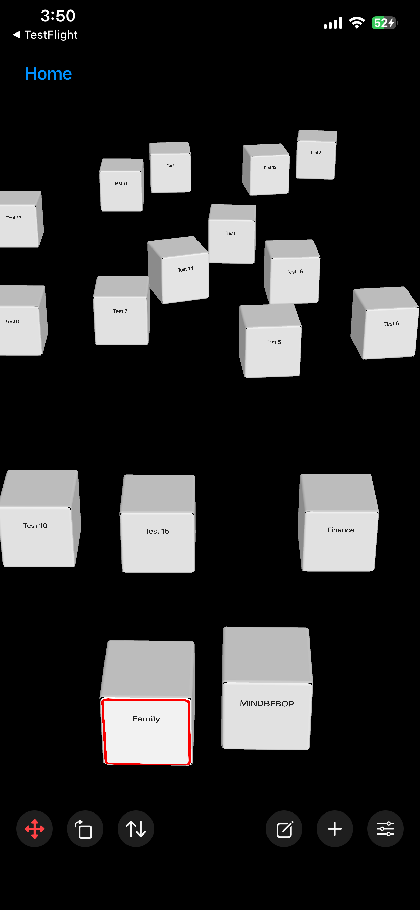

Un espace où les pensées peuvent avoir leur place, où les chemins possibles restent ouverts, et où vous décidez quand — et même si — vous souhaitez les emprunter.
Les pensées peuvent traverser le Mental Background pendant que vous faites autre chose.
Certaines passent.
D'autres reviennent sans cesse.
Parfois, il suffit de changer votre relation avec une pensée.
Vous pouvez la regarder autrement.
La mettre de côté.
Lui accorder moins d'attention.
Établir une limite.
Ou laisser votre attention se déplacer ailleurs.
La pensée peut alors s'apaiser.
Mais parfois, elle persiste.
L'Espace des pensées offre à une pensée un endroit où exister sans vous obliger à la résoudre, à l'organiser ou à la transformer en tâche.
Et si vous découvrez un jour que vous souhaitez aller quelque part à partir de cette pensée, un chemin peut commencer là.
Une pensée peut avoir une place
avant d'avoir une destination.


Une grande partie de MINDBEBOP commence par des pensées qui peuvent être exprimées avec des mots.
Une phrase.
Une inquiétude.
Un rappel.
Une idée.
Quelque chose que vous vous répétez.
Quelque chose qui apparaît alors que votre attention devrait être ailleurs.
Ces pensées verbales peuvent circuler dans ce que MINDBEBOP appelle le Mental Background.
MINDBEBOP ne suppose pas que toutes les pensées présentes dans le Mental Background sont importantes.
Il ne suppose pas non plus que toute pensée récurrente n'est qu'un bruit dépourvu de sens.
Différentes pensées peuvent nécessiter différentes façons d'entrer en relation avec elles.
Certaines pensées peuvent se comporter comme du Bruit mental.
Elles peuvent se répéter.
Interrompre votre attention.
Prendre une importance apparente disproportionnée par rapport à leur importance réelle.
Ou simplement rester difficiles à laisser de côté.
Les différents outils MINDBEBOP proposent différentes façons de modifier votre relation avec ces pensées.
MindFlipOut
Regardez une pensée récurrente sous un autre angle.
MindShoutOut
Mettez de côté une pensée que vous n'avez pas besoin de porter en vous pour le moment.
MindZoneOut
Offrez un moment de calme à un esprit surchargé.
MindBackOut
Prenez de la distance avec certaines applications.
MindBackyard
Donnez à votre attention de l'espace pour se déplacer.
Parfois, ce changement de relation suffit.
La pensée s'apaise.
Rien d'autre n'a besoin de se produire.
Mais parfois, une pensée persiste.
Cela soulève une question que MINDBEBOP commence à explorer :
Si changer notre relation avec une pensée ne suffit pas,
pourrait-il parfois exister un endroit vers lequel nous souhaitons aller à partir de cette pensée ?
C'est une hypothèse.
MINDBEBOP ne suppose pas que toute pensée persistante contient un objectif ou une destination cachée.
L'Espace des pensées nous donne un endroit pour le découvrir.
Le Mental Shelving consiste à mettre consciemment quelque chose de côté dans son esprit afin que cela n'occupe plus constamment l'attention immédiate.
La pensée n'est pas nécessairement résolue.
Elle n'est pas nécessairement oubliée.
Vous vous autorisez à la laisser de côté pour le moment, tout en conservant la possibilité d'y revenir plus tard.
L'Espace des pensées donne une dimension spatiale à cet acte.
Pensée
↓
Thought Block
↓
Donnez-lui une place dans l'Espace des pensées
↓
Laissez-la là
↓
Revenez quand vous le souhaitez
Nous appelons cela le Spatial Mental Shelving.
Le terme « Shelving » ne désigne pas une étagère physique ou graphique.
Il désigne l'acte mental de mettre quelque chose de côté.
L'Espace des pensées donne à cet acte une place visible et persistante dans l'espace.
Un Thought Block peut simplement exister quelque part dans cet espace.
Aucun objet en forme d'étagère n'est nécessaire.
Aucune catégorie n'est nécessaire.
Aucune priorité n'est nécessaire.
Aucune date limite n'est nécessaire.
Aucune action n'est nécessaire.
Donnez une place à la pensée.
Mettez-la de côté
sans la perdre.
La plupart des systèmes numériques transforment une pensée en information.
Pensée
↓
Texte
↓
Élément de liste
L'Espace des pensées explore une autre forme de représentation.
Pensée
↓
Thought Block
↓
Place
Un Thought Block donne à une pensée une présence visuelle persistante dans l'espace.
Vous pouvez le déplacer.
Vous déplacer autour de lui.
Le faire pivoter.
Changer sa taille.
Vous en approcher.
Vous en éloigner.
Le laisser quelque part.
Revenir plus tard.
Ou simplement le laisser tranquille.
Voir une pensée ne signifie pas que vous devez vous en occuper.
Il existe une différence entre :
Je dois continuer à m'en souvenir.
et :
Je sais où cela se trouve.
Le Spatial Mental Shelving explore la possibilité qu'attribuer une place persistante à une pensée contribue à créer cette seconde sensation.
La pensée reste accessible.
Mais rester accessible ne signifie pas devoir occuper constamment le premier plan de votre attention.
La plupart des logiciels attirent les informations vers votre attention.
Regardez ceci.
Souvenez-vous de cela.
Répondez à ceci.
Faites cela ensuite.
L'Espace des pensées peut inverser cette relation.
Le Thought Block peut rester là où il se trouve.
Vous décidez si vous souhaitez vous en approcher.
Ce n'est pas la pensée qui m'interrompt.
C'est moi qui choisis de m'en approcher.
Vous pouvez vous en approcher et rester un moment avec elle.
Vous pouvez la déplacer.
Vous pouvez découvrir quelque chose de nouveau à son sujet.
Ou vous pouvez vous retourner et la laisser là.
La décision de vous en approcher vous appartient.
La plupart des systèmes d'information vous demandent rapidement de classer ce que vous saisissez.
Quelle catégorie ?
Quel projet ?
Quelle priorité ?
Pour quand ?
L'Espace des pensées peut commencer par une question plus fondamentale :
Où est-ce que je veux placer cela ?
Cela peut suffire.
Le placement peut précéder l'organisation.
Ou l'organisation peut ne jamais être nécessaire.
Une liste exprime généralement les relations par l'ordre, les étiquettes et les catégories.
Un espace peut les exprimer par le placement.
Une pensée peut être proche.
Une autre peut être plus éloignée.
Deux pensées peuvent se trouver côte à côte.
Quelque chose peut rester directement dans votre champ de vision.
Autre chose peut rester dans un endroit où vous risquez moins de le rencontrer.
L'Espace des pensées n'a pas besoin d'attribuer une signification universelle à ces positions.
Plus proche ne signifie pas nécessairement plus important.
Plus éloigné ne signifie pas nécessairement moins important.
Plus petit ne signifie pas nécessairement moins significatif.
Une rotation particulière ne doit pas nécessairement représenter un type de pensée particulier.
L'agencement peut simplement refléter la manière dont vous souhaitez que ces pensées existent autour de vous.
Vous n'avez pas toujours besoin de passer formellement en revue ce qui occupe votre esprit.
Parfois, vous pouvez rencontrer des pensées en vous déplaçant dans l'Espace des pensées.
Ah, c'est toujours là.
Je vois cela autrement maintenant.
Ces deux choses sont peut-être liées.
Je n'ai toujours pas envie de m'en occuper.
Peut-être qu'il y a un endroit où je voudrais aller à partir de là.
Vous pouvez ensuite continuer à vous déplacer.
Vous n'êtes pas obligé de traiter tout ce que vous rencontrez.
L'Espace des pensées peut rendre l'examen de vos pensées moins semblable au traitement d'une boîte de réception et davantage à la rencontre d'éléments dans un environnement.
Un Thought Block n'est pas la même chose qu'un objectif.
Et ce n'est pas non plus la même chose qu'une Mental Destination.
Imaginez un Thought Block appelé :
Famille
La famille n'est pas une destination.
Mais différentes directions possibles peuvent en émerger.
Famille
↙ ↓ ↘
Passer davantage de temps ensemble sans distractions
Créer une plus grande marge de manœuvre financière
Faire preuve de plus de patience à la maison
Ces directions peuvent coexister.
Elles peuvent avoir de l'importance à différents moments.
Elles peuvent s'inscrire dans des horizons temporels différents.
Elles peuvent éventuellement mener à différentes Mental Destinations.
Ou ne jamais devenir des Mental Navigations.
Un Thought Block n'a donc pas besoin d'un vecteur unique et fixe.
Un Thought Block peut être un point de départ
à partir duquel plusieurs directions sont possibles.
L'Espace des pensées offre un moyen concret de conserver des chemins possibles avec une pensée.
Un Thought Block peut être associé à des Mental Steps enregistrés dans MindEntry.
Un Thought Block peut être associé à un seul ensemble de Mental Steps.
Ou à plusieurs.
Thought Block
↓
Mental Steps
Mental Steps
Mental Steps
Lorsque des Mental Steps sont associés, un petit indicateur de lien apparaît directement sur le Thought Block.
Le nombre indique combien d'ensembles de Mental Steps associés sont disponibles.
Touchez l'indicateur pour voir les Mental Steps associés à cette pensée.
Choisissez-en un, et MindEntry l'ouvre pour que vous puissiez commencer ces Mental Steps.
Rencontrer la pensée
↓
Voir les chemins possibles
↓
En choisir un quand vous le souhaitez
↓
Commencer les Mental Steps dans MindEntry
Le Thought Block reste la pensée.
Les Mental Steps associés restent des chemins possibles.
La décision d'en emprunter un vous appartient.


Associer des Mental Steps existants n'est pas la seule possibilité.
Parfois, vous rencontrez un Thought Block et réalisez qu'aucun des chemins disponibles ne correspond à ce que vous souhaitez faire maintenant.
Ou peut-être n'avez-vous encore créé aucun Mental Steps pour cette pensée.
L'Espace des pensées peut également servir de point de départ pour de nouveaux Mental Steps.
Plutôt que de vous demander de commencer avec un plan entièrement défini, une interaction avec la pensée peut vous aider à découvrir une Mental Destination possible.
À partir de là, MindEntry peut vous aider à commencer à avancer grâce aux Mental Steps.
Thought Block
↓
Explorer ce que vous pourriez faire
↓
Choisir une Mental Destination
↓
Créer des Mental Steps
↓
Commencer une Mental Navigation
La distinction importante reste la même :
Un Thought Block ne devient pas automatiquement une tâche.
Vous décidez si l'interaction avec cette pensée doit mener à une action.
Le Spatial Mental Shelving donne une place à une pensée.
Mais une fois qu'une pensée a une place, une autre question apparaît :
Quels types de structures pourraient modifier
la manière dont nous rencontrons une pensée ?
MINDBEBOP appelle ces structures Thought Furniture.
Thought Furniture n'est pas simplement une décoration dans l'Espace des pensées.
Il s'agit de concevoir des façons particulières d'interagir avec les pensées.
Un élément de Thought Furniture pourrait vous aider à examiner une pensée, à changer de perspective, à explorer des directions possibles ou à interagir avec elle autrement.
La Workbench en est le premier exemple concret.
Certaines pensées semblent vouloir nous protéger de quelque chose.
Elles peuvent anticiper un échec.
Un rejet.
Une perte.
Une situation embarrassante.
Ou d'autres résultats que nous préférerions éviter.
MINDBEBOP appelle ces pensées des Fear-based Protective Thoughts (pensées protectrices fondées sur la peur).
Par exemple :
Et si j'échouais ?
Cette pensée peut revenir sans cesse.
Elle peut interrompre votre attention.
Vous pouvez essayer de la regarder autrement ou de la mettre de côté.
Parfois, cela suffit.
Mais parfois, la pensée persiste.
La Workbench propose une autre manière d'interagir avec elle.
Au lieu d'essayer immédiatement de faire disparaître la pensée, la Workbench pose une question :
Cette pensée pourrait-elle vous indiquer quelque chose d'utile que vous pourriez faire ?
Vous n'êtes pas obligé de répondre oui.
La Workbench propose différentes possibilités selon votre réponse.

Si la pensée semble suggérer une action utile, la Workbench demande :
Que pourriez-vous faire ?
Vous saisissez votre propre réponse.
Par exemple, si vous craignez d'échouer lors d'une présentation à venir, vous pourriez répondre :
Répéter l'introduction pendant cinq minutes.
La Workbench peut utiliser cette réponse comme nouvelle Mental Destination et comme nom d'un nouvel ensemble de Mental Steps.
MindEntry peut ensuite vous aider à avancer vers cet objectif grâce aux Adaptive Steps.
Fear-based Protective Thought
↓
Que pourriez-vous faire ?
↓
Votre réponse
↓
Mental Destination
↓
Adaptive Steps
↓
Mental Navigation
La Workbench ne décide pas ce que vous devriez faire.
Elle vous donne l'occasion de découvrir vous-même une action utile.
Et la prochaine étape peut être suffisamment petite pour que vous puissiez la commencer depuis votre position actuelle.
Parfois, vous ne savez pas si une pensée protectrice suggère quelque chose d'utile.
Vous avez peut-être déjà eu des inquiétudes similaires.
Et peut-être avez-vous déjà avancé vers une Mental Destination malgré ces inquiétudes.
MindAnchor peut conserver deux types d'informations provenant d'une Mental Navigation précédente :
Expected Blocks
Les obstacles que vous pensiez rencontrer.
What really happened
Ce que vous avez réellement vécu.
Si les deux ont été enregistrés, la Workbench peut les présenter pour comparaison.
Par exemple :
Expected Block
Je vais probablement perdre tous mes moyens pendant la présentation.
What really happened
J'étais nerveux au début, mais j'ai terminé la présentation.
Cette comparaison ne prouve pas que la prochaine expérience se déroulera de la même manière.
Elle ne garantit pas que l'obstacle redouté disparaîtra.
Elle ne signifie pas non plus que la peur initiale était sans fondement.
Elle vous permet simplement de comparer vos attentes avec vos expériences réelles.
Cela peut modifier la manière dont vous rencontrez cette pensée aujourd'hui.
Ou peut-être pas.
L'interprétation vous appartient.
Parfois, vous ne souhaitez pas explorer une action.
Vous ne souhaitez peut-être pas non plus revenir sur des expériences passées.
Vous souhaitez peut-être simplement un moment de calme.
La Workbench peut vous proposer une session à faible stimulation dans MindZoneOut, en mode None.
Vous n'avez pas besoin de définir une Mental Destination.
Vous n'avez pas besoin de créer des Mental Steps.
Et vous n'avez pas besoin de résoudre la pensée avant de vous en éloigner.
Toutes les pensées n'ont pas besoin d'une réponse.
Parfois, vous pouvez simplement choisir le calme.
Une pensée protectrice n'est pas automatiquement un avertissement qu'un événement négatif va se produire.
Mais elle n'est pas non plus automatiquement un bruit dépourvu de sens.
La Workbench ne détermine pas quelle interprétation est correcte.
Elle ne pose pas de diagnostic sur la pensée.
Elle ne choisit pas votre Mental Destination.
Elle ne vous oblige pas à créer des Mental Steps.
Elle propose une structure pour explorer votre relation avec cette pensée.
Il y a peut-être quelque chose d'utile à faire.
Il y a peut-être une expérience utile à se rappeler.
Ou peut-être ne souhaitez-vous rien faire pour le moment.
Les trois possibilités sont valables.
C'est ce qui fait de la Workbench un exemple de Thought Furniture.
La structure modifie les interactions possibles.
Mais les décisions vous appartiennent toujours.
Associer des Mental Steps à un Thought Block ne transforme pas la pensée en tâche.
Créer de nouveaux Mental Steps ne signifie pas que chaque étape doit être accomplie.
Un chemin possible ne doit pas nécessairement devenir le chemin principal.
Plusieurs chemins peuvent rester disponibles simultanément.
Et vous n'êtes obligé d'en suivre aucun.
Cette pensée est ici.
Il existe des endroits où je pourrais aller à partir d'elle.
Je n'ai pas besoin d'aller quelque part maintenant.
L'Espace des pensées ne devrait pas devenir un système qui examine votre vie et annonce :
7 objectifs.
23 étapes.
3 choses que vous auriez déjà dû faire.
Cela transformerait les possibilités en pression.
L'Espace des pensées explore la possibilité inverse :
Un chemin peut rester ouvert
sans devenir une exigence.
Parfois, vous vous approchez d'un Thought Block et réalisez que vous souhaitez réellement changer quelque chose.
Il existe un endroit vers lequel vous souhaitez aller à partir de là.
Une direction possible peut alors devenir une direction intentionnellement choisie.
Vous pouvez sélectionner des Mental Steps déjà associés au Thought Block.
Ou découvrir une nouvelle Mental Destination grâce à une interaction comme la Workbench.
Le changement important n'est pas que le Thought Block soit devenu une tâche.
C'est que vous avez choisi une direction.
Pensée
↓
Directions possibles
↓
Direction choisie
↓
Mental Destination
↓
Mental Navigation
MindEntry fournit la couche Navigation.
Vous pouvez avancer vers la Mental Destination grâce aux Mental Steps.
Effectuer le prochain mouvement.
Voir où vous vous trouvez ensuite.
Changer d'itinéraire.
Changer de Mental Destination.
Ou continuer depuis votre nouvelle Current Position.
Cette distinction est importante.
La Mental Navigation implique un mouvement intentionnel vers une Mental Destination.
Current Position
↓
Mental Steps
↓
Mental Destination
L'Espace des pensées n'exige rien de tout cela.
Vous pouvez y entrer sans Mental Destination.
Vous pouvez vous déplacer sans chercher à arriver quelque part.
Vous pouvez regarder un Thought Block sans commencer de Navigation.
Vous pouvez y associer des Mental Steps sans les démarrer.
Vous pouvez voir plusieurs directions possibles et n'en choisir aucune.
L'Espace des pensées peut accueillir les possibilités
avant qu'elles ne deviennent une Navigation.
MindBackyard contient différents espaces correspondant à différentes relations avec l'attention.
Infinite Hallway ne contient presque rien qui nécessite de réfléchir.
Bouger.
Se promener.
Laisser l'attention se détendre.
L'Espace des pensées permet à des éléments issus de votre propre esprit d'exister dans l'environnement.
Bouger.
Remarquer.
S'approcher.
Changer d'orientation.
Passer à côté.
Aucun des deux espaces n'exige de destination.
Infinite Hallway peut également faire partie d'une Mental Navigation.
Un Mental Step peut vous y envoyer pendant un moment, puis vous ramener au même Mental Step actif lorsque vous êtes prêt à continuer.
L'Espace des pensées et Infinite Hallway n'ont donc pas besoin de devenir le même environnement.
Ils peuvent jouer des rôles différents au sein du système MINDBEBOP.
L'Espace des pensées n'est pas destiné à devenir un gestionnaire visuel de tâches.
Il n'a pas besoin de colonnes To Do, Doing et Done.
Il n'a pas besoin de scores de productivité.
Il n'a pas besoin de séries de réussites.
Il n'a pas besoin de vous récompenser lorsque vous remplissez l'espace.
Il n'a pas besoin de vous récompenser lorsque vous le videz.
Il n'a pas besoin de transformer chaque pensée en travail.
Et il n'a pas besoin de transformer chaque Mental Navigation possible en obligation.
Cela ne signifie pas que MINDBEBOP rejette la productivité.
La productivité est l'une des nombreuses raisons possibles d'utiliser la Mental Navigation.
Mais l'Espace des pensées permet aussi d'entretenir des relations avec des pensées qui n'ont rien à voir avec l'accomplissement de tâches.
Une possibilité n'est pas une pression.
L'Espace des pensées devrait rester spacieux.
Les zones vides ne sont pas de l'espace d'écran gaspillé.
Elles font partie de l'expérience.
Un Thought Block n'a pas besoin d'être toujours directement devant vous.
Les chemins possibles n'ont pas besoin d'être constamment visibles.
L'environnement ne devrait pas constamment rivaliser pour attirer votre attention.
L'espace autour d'une pensée
peut compter autant
que la pensée elle-même.
Un environnement spatial ne devrait pas rendre difficile la recherche de vos propres pensées.
Se promener peut être utile lorsque vous souhaitez vous promener.
Cela ne devrait pas être obligatoire lorsque vous savez déjà ce que vous cherchez.
L'exploration peut être spatiale.
Retrouver quelque chose doit rester simple.
L'Espace des pensées ne devrait jamais devenir un labyrinthe que vous devez entretenir.
L'Espace des pensées n'a pas besoin d'être réinitialisé chaque fois que vous le quittez.
Les Thought Blocks peuvent rester là où vous les avez placés.
Les Mental Steps peuvent rester associés à ces blocs.
Mais votre relation avec ces pensées n'a pas besoin de rester identique.
Avant, cela me semblait très proche.
Maintenant, je veux prendre davantage de distance.
Avant, je ne voyais qu'une seule direction possible.
Maintenant, j'en vois plusieurs.
Je pensais devoir agir.
Maintenant, je peux simplement laisser cela tranquille.
Les mots inscrits sur le Thought Block n'ont peut-être pas changé.
Ce qui a changé, c'est peut-être votre manière de le rencontrer.
La plupart des applications conservent la dernière version des informations.
L'Espace des pensées pourrait préserver quelque chose de plus discret.
Ce qui est resté proche.
Ce qui s'est éloigné.
Ce qui est resté.
Ce vers quoi vous êtes revenu.
Ce qui a commencé à paraître différent.
Vous pourriez revenir après plusieurs jours, semaines ou mois et remarquer que l'espace vous semble différent.
Pas parce qu'une application a calculé un score.
Pas parce qu'un tableau de bord vous a annoncé que vous aviez progressé.
Mais parce que vous reconnaissez vous-même la différence.
Ma relation avec cela a changé.
Ce changement ne nécessite pas une Mental Navigation terminée.
Parfois, déplacer quelque chose, le laisser tranquille ou le rencontrer autrement peut suffire.
L'Espace des pensées n'est pas destiné à visualiser toutes vos pensées.
Ce n'est pas une carte mentale en 3D.
Il n'a pas besoin de révéler toutes les associations.
Il n'a pas besoin de tout relier à tout.
Parfois, voir moins peut être plus utile.
Un Thought Block peut exister sans révéler toutes ses relations.
Une direction possible peut rester inexplorée.
Une pensée peut rester seule.
L'Espace des pensées cherche moins à reconstruire la structure de votre esprit qu'à vous donner des moyens d'entrer intentionnellement en relation avec ce qui s'y trouve.
Le Spatial Mental Shelving donne aux pensées des places persistantes.
Les associations avec les Mental Steps permettent de garder des chemins possibles ouverts.
La Workbench introduit Thought Furniture comme moyen d'interagir avec les Fear-based Protective Thoughts.
Ensemble, ces fonctionnalités ouvrent la voie à d'autres expériences.
Si une pensée peut avoir une place,
qu'est-ce qui pourrait encore changer notre manière de la rencontrer ?
De futurs éléments de Thought Furniture pourraient révéler quelque chose.
Le dissimuler.
Le filtrer.
Le séparer.
Le combiner.
Le réorienter.
Le transformer.
Ou faciliter la découverte d'une direction possible.
Imaginez un Thought Block appelé A.
A → une autre façon de voir A
A → des directions possibles
A → des parties plus petites
A + B → quelque chose de nouvellement visible
ABC → CBA
A → temporairement hors de vue
A → Mental Steps
A → ?
Ce sont des possibilités de conception, pas des affirmations sur la manière dont les pensées doivent fonctionner.
L'important n'est pas l'apparence du Furniture.
C'est le type de relation avec la pensée que l'interaction rend possible.
Thought Furniture n'est pas une décoration.
C'est une expérience de conception des relations avec les pensées.
L'une des possibilités explorées par MINDBEBOP est Thought Orientation.
Parfois, continuer à avancer nécessite de changer de destination.
Parfois, rendre la destination plus petite aide à continuer à avancer.
Mais Thought Orientation pose une autre question.
Que se passe-t-il si je ne change pas immédiatement Point B,
mais plutôt la manière dont je le regarde ?
Retournez-le.
Regardez-le depuis un endroit inattendu.
Observez ce qui apparaît.
Le Thought Block lui-même n'a peut-être pas besoin de changer.
Ce qui change pourrait être votre manière de le rencontrer.
La même pensée.
Une autre perspective.
D'autres choses deviennent visibles.
Une autre perspective pourrait révéler une nouvelle direction possible.
Elle pourrait faire apparaître différemment une Mental Destination existante.
Elle pourrait révéler une nouvelle Mental Destination.
Ou montrer qu'aucune Navigation n'est nécessaire.
Thought Furniture ne devrait pas décider quelle interprétation est correcte.
Il devrait créer un autre point de vue depuis lequel vous pouvez regarder.
Une Mental Navigation peut finalement atteindre sa Mental Destination.
Mais arriver ne signifie pas nécessairement que le Thought Block d'origine doit disparaître.
Le Thought Block n'a jamais été identique à la destination.
Une autre direction possible peut en émerger plus tard.
Et l'expérience de la Navigation peut modifier votre manière de rencontrer la pensée d'origine.
Pensée
↓
Mental Navigation
↓
Arrivée
↓
Peut-être que la pensée paraît maintenant différente
Atteindre Point B ne signifie pas devoir déclarer la pensée définitivement terminée.
MindAnchor peut préserver quelque chose de significatif d'une Mental Navigation réussie.
Il peut également enregistrer les obstacles que vous aviez anticipés et ce qui s'est réellement produit.
Lorsque les deux enregistrements sont disponibles, la Workbench peut les utiliser.
Cela crée un lien entre les Mental Navigations passées et les futures rencontres avec des pensées protectrices.
Expected Blocks
↓
Mental Navigation
↓
What really happened
↓
MindAnchor
↓
Une future rencontre avec la Workbench
Ces enregistrements ne vous disent pas ce que vous devez penser.
Ils vous donnent quelque chose à comparer.
Cette comparaison peut vous aider à voir une pensée future autrement.
Une question plus large reste ouverte :
Quelque chose préservé dans MindAnchor à partir d'une Navigation réussie
peut-il changer la perspective depuis laquelle une autre Navigation commence ?
MINDBEBOP ne présuppose pas la réponse.
Il propose des moyens d'explorer cette question.
Ensemble, ces idées suggèrent une structure possible plus large pour MINDBEBOP.
Une pensée verbale apparaît dans le Mental Background.
↓
Un changement de relation peut suffire.
↓
Parfois, la pensée persiste.
↓
Donnez-lui une place dans l'Espace des pensées.
↓
Rencontrez-la sous différentes perspectives.
↓
Explorez des chemins possibles ou interagissez avec elle grâce à Thought Furniture.
↓
Choisissez une Mental Destination lorsque vous souhaitez aller quelque part.
↓
Naviguez.
↓
Arrivez.
↓
Préservez quelque chose de votre arrivée dans MindAnchor.
↓
Observez ce qui paraît différent la prochaine fois.
Ce n'est pas une règle décrivant le fonctionnement de l'esprit.
C'est un modèle que MINDBEBOP explore.
Certaines pensées peuvent s'apaiser bien plus tôt.
Certaines peuvent rester dans l'Espace des pensées sans jamais devenir une Navigation.
Certaines peuvent faire apparaître plusieurs directions possibles.
Certaines peuvent mener quelque part, puis ailleurs plus tard.
Certaines peuvent être examinées sur la Workbench sans créer de Mental Steps.
Le système n'a pas besoin de décider lequel de ces chemins devrait se produire.
L'Espace des pensées est né d'une question simple :
Que se passe-t-il lorsque mettre une pensée de côté
devient une expérience spatiale ?
Aujourd'hui, cette expérience prend de l'ampleur.
Nous pouvons nous demander :
Donner une place à une pensée change-t-il le besoin de continuer à s'en souvenir ?
S'approcher volontairement d'une pensée est-il différent du fait d'être interrompu par elle ?
Quelles pensées s'apaisent après un petit changement dans notre relation avec elles ?
Quelles pensées persistent ?
Certaines pensées persistantes semblent-elles ouvrir des directions possibles ?
Un Thought Block peut-il avoir plusieurs chemins possibles sans créer de pression pour en suivre un ?
Thought Furniture peut-il nous aider à rencontrer les pensées autrement ?
Une pensée protectrice peut-elle parfois suggérer une action utile ?
Comparer Expected Blocks et What really happened peut-il modifier notre manière de rencontrer une pensée ?
Changer de perspective peut-il révéler une direction qui n'était pas évidente auparavant ?
Atteindre une Mental Destination change-t-il la manière dont nous rencontrons plus tard la pensée d'origine ?
Nous n'avons pas besoin de connaître les réponses à l'avance.
L'Espace des pensées nous donne un endroit pour les découvrir.
Donnez une place à une pensée.
Laissez-la exister sans exiger d'action.
Gardez les chemins possibles ouverts sans les transformer en obligations.
Explorez une autre manière d'interagir avec elle lorsque cela peut être utile.
Changez de perspective lorsqu'un autre point de vue pourrait vous aider.
Naviguez lorsque vous souhaitez aller quelque part.
Et découvrez si l'endroit où vous arrivez change ce que vous pouvez voir ensuite.
L'Espace des pensées est exploré dans MindBackyard, dans le cadre du MINDBEBOP Mental Background OS.
En savoir plus sur la Mental Navigation
Copyright © 2026 MINDBEBOP — All rights reserved.